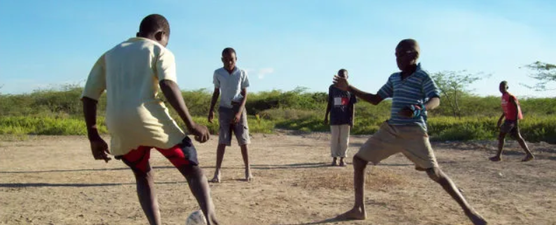
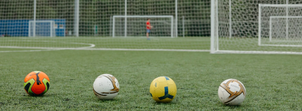
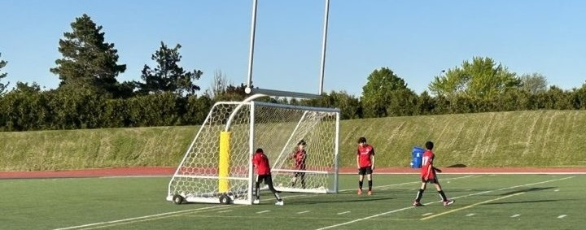
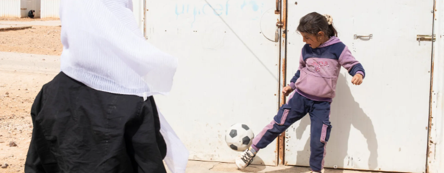

Join us in the game against poverty as we strive to make a lasting impact through the universal language of soccer. Your contribution to the 'Kicking Poverty Out' initiative goes beyond the field, supporting sustainable soccer programs that empower communities to rise above economic challenges. By investing in the development of soccer infrastructure, we aim to provide access to this beautiful game for underprivileged youth, creating opportunities for skill-building, teamwork, and personal growth.
Immerse yourself in the spirit of community and sportsmanship by contributing to our 'Netting Dreams' campaign. Your support will play a pivotal role in turning barren grounds into vibrant soccer fields, creating a space where dreams take root and talents flourish. By donating to this cause, you're not just helping lay the foundation for soccer infrastructure; you're cultivating a hub for camaraderie, health, and joy. Imagine the laughter of children, the cheers of spectators, and the echoes of goals scored—all made possible by your generosity.
Experience the transformative power of soccer as we rally behind the 'Soccer Aid' initiative. Your generous contributions serve as goalposts of hope, creating opportunities for children in need to discover joy, camaraderie, and life skills in this beautiful game. By supporting Soccer Aid, you are directly impacting the lives of underprivileged youth, providing them with a chance to kickstart their dreams. Join us in this mission to turn every donation into a stepping stone towards a more inclusive future.
Step into a world where every kick empowers. 'Footwork for the Future' is a call to action, inviting you to contribute to the cause of women's soccer and equality on and off the field. Your donation paves the way for aspiring female athletes, providing them with opportunities to compete, excel, and break through barriers. By supporting this initiative, you contribute to the growth of women's soccer, fostering a sense of strength, resilience, and camaraderie. Together, we can offer hope and inspiration to the champions of tomorrow."
